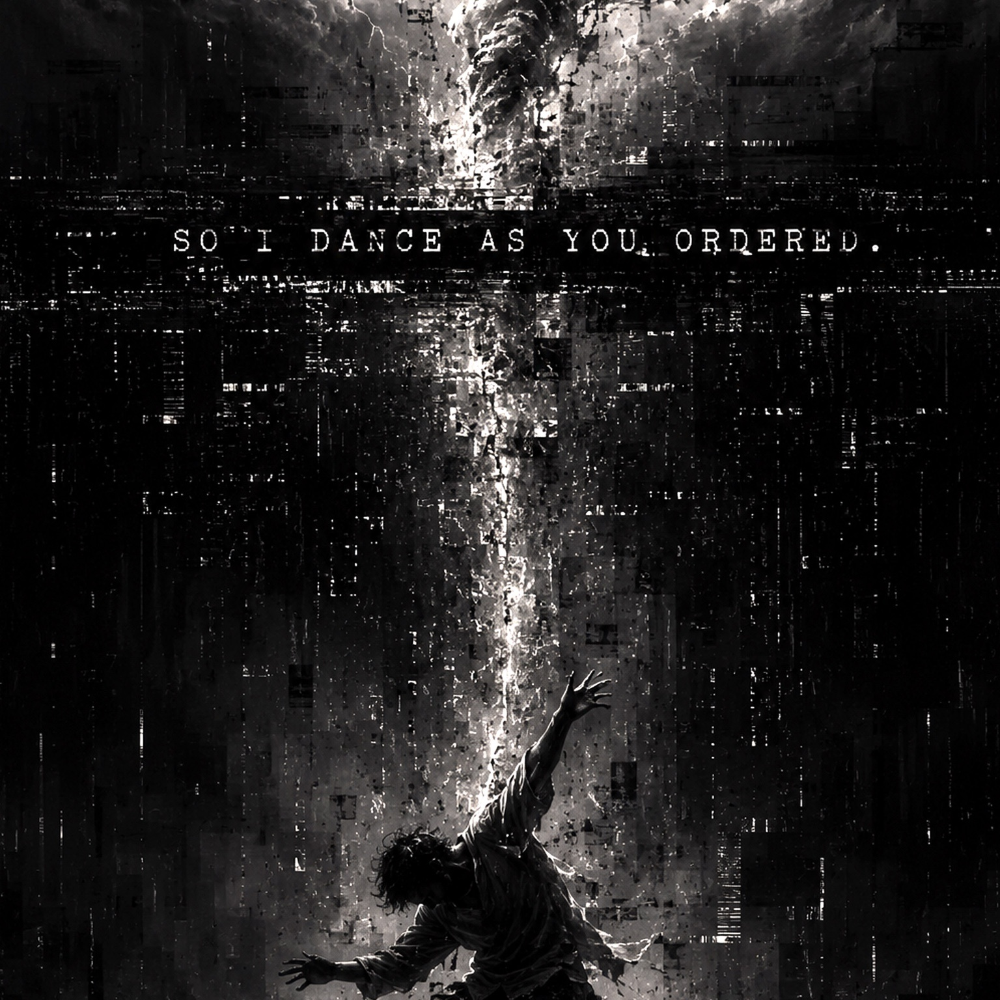

Album
So I Dance as You Ordered
Tears Off · Marek Šniager
- Release date
- 29 July 2026
- Tracks
- 11
- Duration
- 43:35
- Created by
- Marek Šniager / Tears Off
The record
Tracklist
- 01So I Dance as You Ordered
- 02Shooting Star
- 03Test Taste
- 04I Knew
- 05Absolutely Lost
- 06Magic of The Moon
- 07Feel Lip
- 08Carl Cox God
- 09Tectonic Shift
- 10Around Within
- 11Deepest Trust